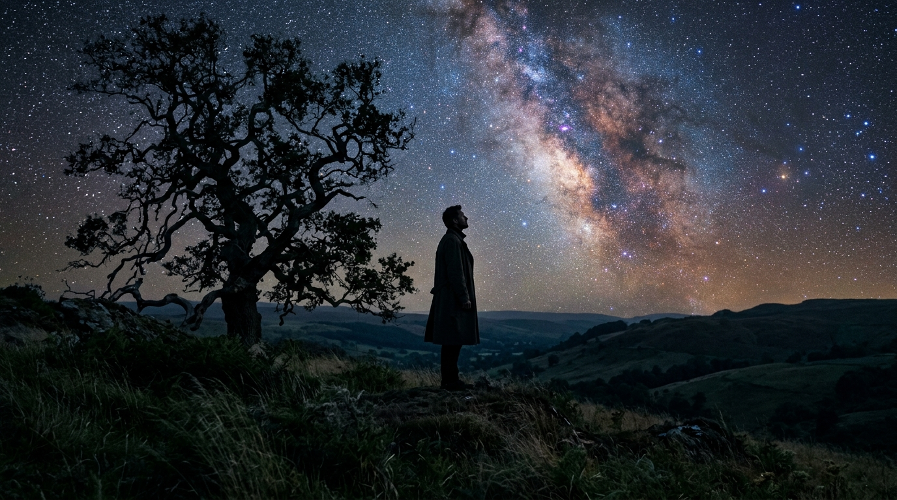
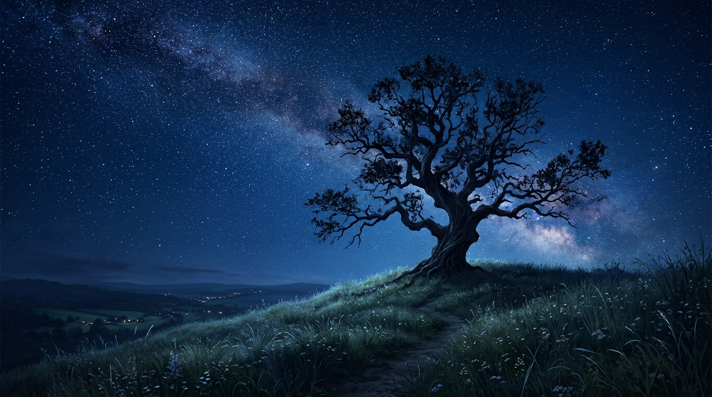
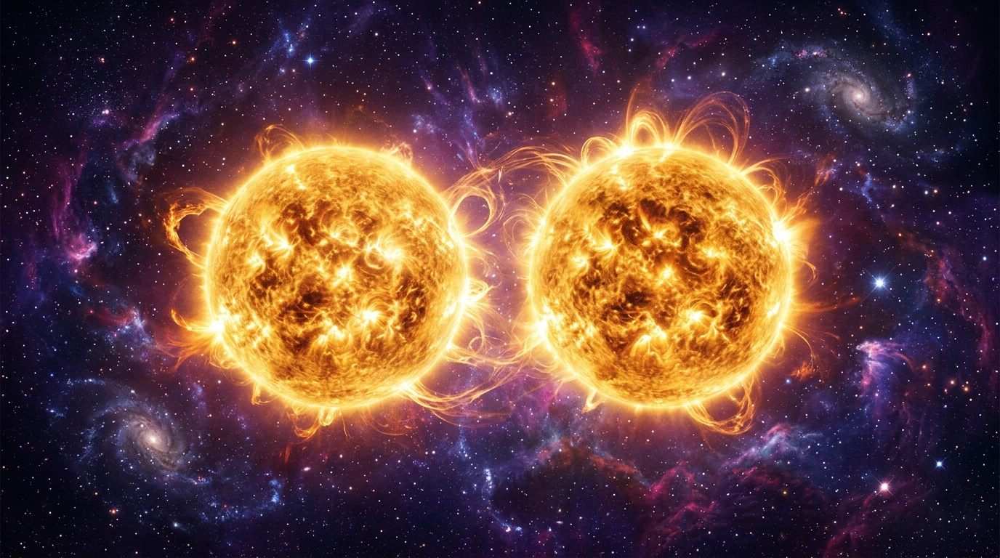
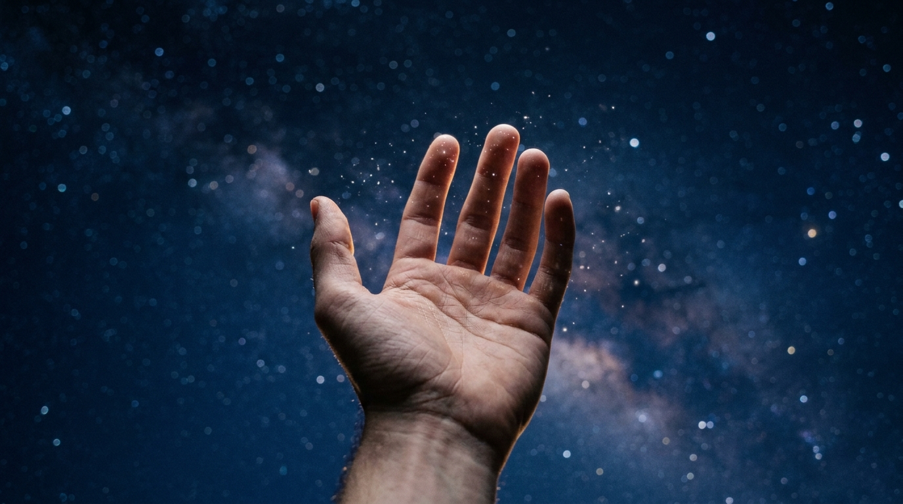

Projekt: sternenseufzer | Erstellt: 2026-09-07 | Gesamtdauer: 40s
Automatisch aggregiert aus allen Shots: Für jedes wiederkehrende Element (Charaktere, Requisiten, Schauplätze) wird hier eine Karteikarte geführt. Klicken: Prompt + Bild + Spezifikationen in Zwischenablage kopieren. Ziehen (Drag & Drop): Bild greifen und direkt in externe KI-Chats (Gemini, Discord etc.) ziehen.

Silhouette eines nachdenklichen Mannes im Mantel, windzerzaustes Haar, im Profil gegen das Sternenlicht.

Sanfte Hügelkuppe mit uralter Eiche, weite Aussicht, nächtliche Grashalme im Gegenlicht.

Zwei majestätische, goldene Sonnen im interstellaren Raum, feine Energiebänder und Protuberanzen.
Indigoblauer Nebelraum mit Millionen funkelnder Lichtpunkte und sanftem Tiefenlicht.

Menschliche Handfläche, gegen die Sterne geöffnet, zarte Rauch-/Lichtfäden an den Fingerspitzen.
"A solitary silhouette of a thoughtful man in a long coat standing on a grassy hilltop next to an ancient gnarled oak tree at night, looking up at an immense breathtaking starry sky filled with luminous constellations, slow upward crane camera movement, cinematic 8k, Terence Malick style, tranquil, philosophical"
"Deep space cinematic shot of two burning, radiant stars hovering close together, intense golden plasma loops and solar flares gently pulsing, surrounding cosmic dust in deep indigo and violet, awe-inspiring, photorealistic sci-fi"
"Cosmic pull back camera movement, the fiery suns shrink into delicate sparkling diamond stars in a vast velvet nebula, shooting stars streaking across the galaxy, beautiful melancholic cosmic wonder, cinematic 8k"
"Close up of a human hand reaching upward into the clear night sky trying to grasp distant sparkling stars, tiny glowing particles of stardust floating around the fingers, soft focus pull to the silhouette of the head against the cosmos, emotional, poetic cinema, fade to black"